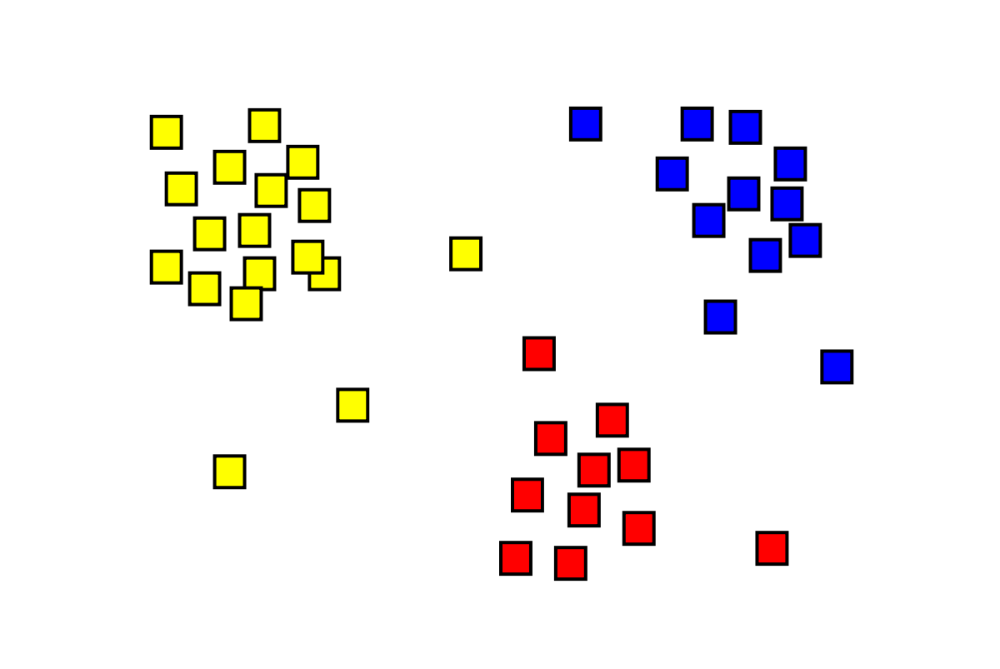

In this study various methods are employed,I first extracted the csv file into power bi and transformed the data into power query for data cleaning and filtering, created data modeling diagram to connect relationship from multiple tables.Used DAX function to calculate measures like date function, sum, averages etc..


Data visualization for Sonic Business Selection.

Decision tree ML iS A project i created to check the scale of salary performance in the company based on the data i collected for Analysis.

Effective data cleaning is a vital part of the data analytics process. Data cleaning is the process of detecting and correcting corrupt or inaccurate records from a record set, table, or database.

This data set has 18 variables over a 6-month period for almost 9,000 customers. These include measurements of account attributes such as purchase amounts, cash advances, and payments. Conducting a cluster analysis on the data set can help a company gain insight into how customers use their credit card facilities, and thereby tailor or revise existing credit products accordingly.
We explore an online retail dataset and create a retention cohort analysis in SQL

Cohort Retention Dashboard visualization in Tableau, dataset from online retail.